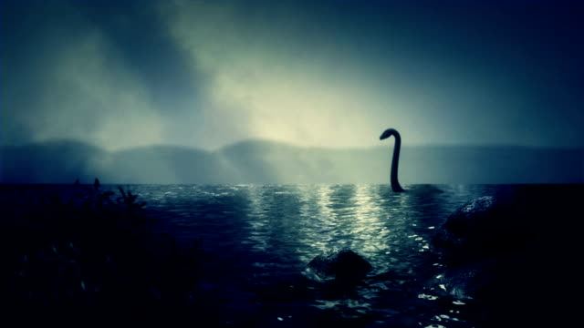

Country: UK
Area: Aspenwood Cottage
Witness Name: Tom Higgs (alias)
Cryptid Name: Loch Ness Monster
Account: I was staying at the nearby cottage to Loch Ness lake when at night i heard strange sounds coming from the lake and decided to check it out. It was passed Midnight but i could not tell you the exact time, that is when i noticed
movement in the water splash and shifting water. A few times something large sleek and black broke the surface of the water, much larger than any fish in that lake that's for sure twice my size. What else could it be? It was definitely
Nessie i'm sure of it and to think i thought the monster was just a legend.

I DO NOT OWN OWN THE RIGHTS TO ALL IMAGES USED ON THIS SITE THE RIGHTS ARE RESERVED TO THE ORIGINAL CREATORS.
Image of Bigfoot is credited to Shutterstock.
Image of Chupacabra is credited to Goddess Geek Blog.
Image of Loch Ness is credited to Istock.